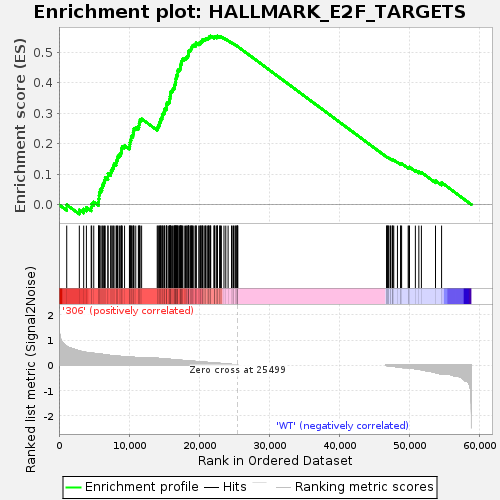
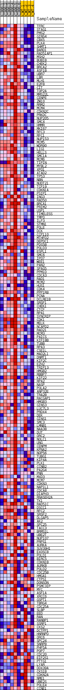
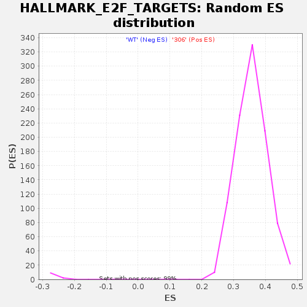

| | | Dataset | 306_WT_express.306_WT.cls#306_versus_WT |
| Phenotype | 306_WT.cls#306_versus_WT |
| Upregulated in class | 306 |
| GeneSet | HALLMARK_E2F_TARGETS |
| Enrichment Score (ES) | 0.5529637 |
| Normalized Enrichment Score (NES) | 1.5467469 |
| Nominal p-value | 0.0 |
| FDR q-value | 0.01139093 |
| FWER p-Value | 0.034 |
Table: GSEA Results Summary

Fig 1: Enrichment plot: HALLMARK_E2F_TARGETS
Profile of the Running ES Score & Positions of GeneSet Members on the Rank Ordered List
| SYMBOL | TITLE | RANK IN GENE LIST | RANK METRIC SCORE | RUNNING ES | CORE ENRICHMENT | | 1 | TFRC | NNN | 1102 | 0.747 | -0.0004 | Yes |
| 2 | STAG1 | NNN | 2899 | 0.566 | -0.0170 | Yes |
| 3 | PMS2 | NNN | 3520 | 0.530 | -0.0146 | Yes |
| 4 | GINS4 | NNN | 3909 | 0.502 | -0.0088 | Yes |
| 5 | CBX5 | NNN | 4592 | 0.482 | -0.0085 | Yes |
| 6 | PLK4 | NNN | 4661 | 0.478 | 0.0021 | Yes |
| 7 | SHMT1 | NNN | 4958 | 0.470 | 0.0086 | Yes |
| 8 | BARD1 | NNN | 5636 | 0.457 | 0.0083 | Yes |
| 9 | RAD51AP1 | NNN | 5662 | 0.456 | 0.0191 | Yes |
| 10 | MSH2 | NNN | 5719 | 0.453 | 0.0294 | Yes |
| 11 | BUB1B | NNN | 5745 | 0.452 | 0.0401 | Yes |
| 12 | CHEK2 | NNN | 5877 | 0.445 | 0.0488 | Yes |
| 13 | BRCA2 | NNN | 6121 | 0.433 | 0.0553 | Yes |
| 14 | ASF1B | NNN | 6183 | 0.431 | 0.0649 | Yes |
| 15 | UBR7 | NNN | 6369 | 0.424 | 0.0722 | Yes |
| 16 | LBR | NNN | 6490 | 0.418 | 0.0805 | Yes |
| 17 | MLH1 | NNN | 6591 | 0.414 | 0.0890 | Yes |
| 18 | E2F8 | NNN | 6978 | 0.397 | 0.0922 | Yes |
| 19 | CIT | NNN | 6989 | 0.397 | 0.1018 | Yes |
| 20 | TOP2A | NNN | 7365 | 0.382 | 0.1048 | Yes |
| 21 | MMS22L | NNN | 7443 | 0.380 | 0.1129 | Yes |
| 22 | CENPE | NNN | 7599 | 0.374 | 0.1195 | Yes |
| 23 | ZW10 | NNN | 7748 | 0.371 | 0.1261 | Yes |
| 24 | RRM2 | NNN | 7854 | 0.366 | 0.1333 | Yes |
| 25 | MCM4 | NNN | 8141 | 0.360 | 0.1373 | Yes |
| 26 | CDKN2C | NNN | 8209 | 0.358 | 0.1450 | Yes |
| 27 | PRKDC | NNN | 8342 | 0.353 | 0.1515 | Yes |
| 28 | NUP205 | NNN | 8404 | 0.351 | 0.1591 | Yes |
| 29 | SMC4 | NNN | 8619 | 0.351 | 0.1641 | Yes |
| 30 | HMMR | NNN | 8805 | 0.346 | 0.1695 | Yes |
| 31 | MKI67 | NNN | 8912 | 0.343 | 0.1761 | Yes |
| 32 | RFC3 | NNN | 8920 | 0.343 | 0.1844 | Yes |
| 33 | RFC1 | NNN | 9024 | 0.339 | 0.1910 | Yes |
| 34 | NUP153 | NNN | 9353 | 0.329 | 0.1936 | Yes |
| 35 | MCM5 | NNN | 10046 | 0.327 | 0.1898 | Yes |
| 36 | WDR90 | NNN | 10103 | 0.325 | 0.1969 | Yes |
| 37 | LIG1 | NNN | 10122 | 0.325 | 0.2046 | Yes |
| 38 | HELLS | NNN | 10184 | 0.323 | 0.2115 | Yes |
| 39 | SMC1A | NNN | 10296 | 0.320 | 0.2175 | Yes |
| 40 | MCM6 | NNN | 10326 | 0.319 | 0.2249 | Yes |
| 41 | TIPIN | NNN | 10542 | 0.316 | 0.2290 | Yes |
| 42 | MYBL2 | NNN | 10583 | 0.315 | 0.2361 | Yes |
| 43 | XPO1 | NNN | 10630 | 0.313 | 0.2430 | Yes |
| 44 | ATAD2 | NNN | 10702 | 0.311 | 0.2495 | Yes |
| 45 | TP53 | NNN | 10951 | 0.304 | 0.2527 | Yes |
| 46 | NBN | NNN | 11322 | 0.294 | 0.2537 | Yes |
| 47 | NUDT21 | NNN | 11402 | 0.291 | 0.2595 | Yes |
| 48 | TCF19 | NNN | 11437 | 0.291 | 0.2661 | Yes |
| 49 | CDKN1A | NNN | 11500 | 0.288 | 0.2721 | Yes |
| 50 | PSIP1 | NNN | 11565 | 0.287 | 0.2781 | Yes |
| 51 | ING3 | NNN | 11787 | 0.280 | 0.2812 | Yes |
| 52 | RAD50 | NNN | 14011 | 0.272 | 0.2500 | Yes |
| 53 | BRCA1 | NNN | 14115 | 0.271 | 0.2550 | Yes |
| 54 | PRIM2 | NNN | 14164 | 0.269 | 0.2608 | Yes |
| 55 | USP1 | NNN | 14360 | 0.264 | 0.2640 | Yes |
| 56 | TIMELESS | NNN | 14362 | 0.264 | 0.2705 | Yes |
| 57 | TMPO | NNN | 14481 | 0.261 | 0.2749 | Yes |
| 58 | ILF3 | NNN | 14500 | 0.261 | 0.2811 | Yes |
| 59 | STMN1 | NNN | 14686 | 0.256 | 0.2842 | Yes |
| 60 | POLE | NNN | 14712 | 0.255 | 0.2901 | Yes |
| 61 | DCK | NNN | 14727 | 0.255 | 0.2961 | Yes |
| 62 | CCP110 | NNN | 14855 | 0.252 | 0.3002 | Yes |
| 63 | MTHFD2 | NNN | 15021 | 0.249 | 0.3035 | Yes |
| 64 | DEPDC1 | NNN | 15035 | 0.249 | 0.3094 | Yes |
| 65 | PDS5B | NNN | 15099 | 0.246 | 0.3144 | Yes |
| 66 | POLD3 | NNN | 15325 | 0.242 | 0.3165 | Yes |
| 67 | ESPL1 | NNN | 15336 | 0.242 | 0.3223 | Yes |
| 68 | SMC6 | NNN | 15338 | 0.241 | 0.3282 | Yes |
| 69 | IPO7 | NNN | 15398 | 0.240 | 0.3331 | Yes |
| 70 | WEE1 | NNN | 15600 | 0.236 | 0.3355 | Yes |
| 71 | PAN2 | NNN | 15766 | 0.232 | 0.3384 | Yes |
| 72 | SPAG5 | NNN | 15776 | 0.232 | 0.3440 | Yes |
| 73 | PPM1D | NNN | 15819 | 0.231 | 0.3490 | Yes |
| 74 | CDCA3 | NNN | 15842 | 0.230 | 0.3543 | Yes |
| 75 | RAD1 | NNN | 15878 | 0.230 | 0.3594 | Yes |
| 76 | MCM2 | NNN | 15910 | 0.228 | 0.3645 | Yes |
| 77 | HUS1 | NNN | 15914 | 0.228 | 0.3700 | Yes |
| 78 | CDK4 | NNN | 16068 | 0.225 | 0.3730 | Yes |
| 79 | PPP1R8 | NNN | 16209 | 0.221 | 0.3760 | Yes |
| 80 | PCNA | NNN | 16282 | 0.220 | 0.3802 | Yes |
| 81 | DCLRE1B | NNN | 16438 | 0.216 | 0.3829 | Yes |
| 82 | SRSF1 | NNN | 16471 | 0.215 | 0.3876 | Yes |
| 83 | CHEK1 | NNN | 16500 | 0.214 | 0.3925 | Yes |
| 84 | CTCF | NNN | 16574 | 0.213 | 0.3965 | Yes |
| 85 | RPA1 | NNN | 16599 | 0.212 | 0.4013 | Yes |
| 86 | SYNCRIP | NNN | 16667 | 0.210 | 0.4053 | Yes |
| 87 | CDK1 | NNN | 16670 | 0.210 | 0.4105 | Yes |
| 88 | MELK | NNN | 16694 | 0.210 | 0.4153 | Yes |
| 89 | NCAPD2 | NNN | 16747 | 0.208 | 0.4195 | Yes |
| 90 | RAD21 | NNN | 16757 | 0.208 | 0.4245 | Yes |
| 91 | MCM3 | NNN | 16942 | 0.203 | 0.4264 | Yes |
| 92 | PAICS | NNN | 16943 | 0.203 | 0.4314 | Yes |
| 93 | KIF18B | NNN | 16945 | 0.203 | 0.4364 | Yes |
| 94 | TUBB | NNN | 16965 | 0.203 | 0.4411 | Yes |
| 95 | RPA3 | NNN | 17179 | 0.197 | 0.4423 | Yes |
| 96 | CSE1L | NNN | 17268 | 0.195 | 0.4456 | Yes |
| 97 | MAD2L1 | NNN | 17299 | 0.195 | 0.4499 | Yes |
| 98 | DNMT1 | NNN | 17316 | 0.195 | 0.4544 | Yes |
| 99 | KIF2C | NNN | 17332 | 0.194 | 0.4590 | Yes |
| 100 | EZH2 | NNN | 17430 | 0.192 | 0.4621 | Yes |
| 101 | TRIP13 | NNN | 17436 | 0.192 | 0.4667 | Yes |
| 102 | HMGB2 | NNN | 17497 | 0.191 | 0.4704 | Yes |
| 103 | RBBP7 | NNN | 17567 | 0.189 | 0.4739 | Yes |
| 104 | KIF22 | NNN | 17642 | 0.187 | 0.4772 | Yes |
| 105 | RPA2 | NNN | 17862 | 0.187 | 0.4781 | Yes |
| 106 | NASP | NNN | 18043 | 0.182 | 0.4795 | Yes |
| 107 | POLA2 | NNN | 18149 | 0.179 | 0.4821 | Yes |
| 108 | ANP32E | NNN | 18247 | 0.177 | 0.4849 | Yes |
| 109 | TRA2B | NNN | 18374 | 0.174 | 0.4870 | Yes |
| 110 | RACGAP1 | NNN | 18446 | 0.172 | 0.4900 | Yes |
| 111 | HMGB3 | NNN | 18475 | 0.171 | 0.4938 | Yes |
| 112 | GINS3 | NNN | 18478 | 0.171 | 0.4980 | Yes |
| 113 | LUC7L3 | NNN | 18510 | 0.170 | 0.5016 | Yes |
| 114 | PRDX4 | NNN | 18532 | 0.170 | 0.5055 | Yes |
| 115 | DEK | NNN | 18732 | 0.165 | 0.5061 | Yes |
| 116 | GINS1 | NNN | 18799 | 0.164 | 0.5091 | Yes |
| 117 | SMC3 | NNN | 18868 | 0.162 | 0.5119 | Yes |
| 118 | LMNB1 | NNN | 18917 | 0.161 | 0.5150 | Yes |
| 119 | NAA38 | NNN | 18988 | 0.159 | 0.5178 | Yes |
| 120 | DUT | NNN | 19034 | 0.158 | 0.5209 | Yes |
| 121 | ORC2 | NNN | 19151 | 0.155 | 0.5228 | Yes |
| 122 | NOLC1 | NNN | 19408 | 0.150 | 0.5221 | Yes |
| 123 | UNG | NNN | 19538 | 0.147 | 0.5235 | Yes |
| 124 | CENPM | NNN | 19539 | 0.147 | 0.5271 | Yes |
| 125 | KPNA2 | NNN | 19559 | 0.146 | 0.5304 | Yes |
| 126 | NOP56 | NNN | 19957 | 0.138 | 0.5271 | Yes |
| 127 | TUBG1 | NNN | 19998 | 0.137 | 0.5298 | Yes |
| 128 | KIF4A | NNN | 20206 | 0.132 | 0.5295 | Yes |
| 129 | PLK1 | NNN | 20226 | 0.131 | 0.5324 | Yes |
| 130 | CCNB2 | NNN | 20259 | 0.130 | 0.5351 | Yes |
| 131 | PA2G4 | NNN | 20427 | 0.126 | 0.5353 | Yes |
| 132 | PNN | NNN | 20452 | 0.126 | 0.5380 | Yes |
| 133 | MXD3 | NNN | 20466 | 0.126 | 0.5409 | Yes |
| 134 | MCM7 | NNN | 20677 | 0.120 | 0.5403 | Yes |
| 135 | CDKN3 | NNN | 20819 | 0.117 | 0.5408 | Yes |
| 136 | NAP1L1 | NNN | 20915 | 0.115 | 0.5420 | Yes |
| 137 | CDCA8 | NNN | 20937 | 0.114 | 0.5444 | Yes |
| 138 | DIAPH3 | NNN | 21134 | 0.110 | 0.5438 | Yes |
| 139 | RNASEH2A | NNN | 21262 | 0.107 | 0.5443 | Yes |
| 140 | TK1 | NNN | 21334 | 0.105 | 0.5456 | Yes |
| 141 | RAD51C | NNN | 21379 | 0.104 | 0.5474 | Yes |
| 142 | DSCC1 | NNN | 21407 | 0.103 | 0.5495 | Yes |
| 143 | RFC2 | NNN | 21572 | 0.099 | 0.5492 | Yes |
| 144 | SRSF2 | NNN | 21627 | 0.098 | 0.5506 | Yes |
| 145 | DLGAP5 | NNN | 21633 | 0.097 | 0.5530 | Yes |
| 146 | AK2 | NNN | 22129 | 0.086 | 0.5466 | No |
| 147 | SPC25 | NNN | 22137 | 0.085 | 0.5486 | No |
| 148 | TACC3 | NNN | 22160 | 0.085 | 0.5503 | No |
| 149 | BRMS1L | NNN | 22244 | 0.082 | 0.5509 | No |
| 150 | UBE2T | NNN | 22517 | 0.081 | 0.5483 | No |
| 151 | NUP107 | NNN | 22542 | 0.081 | 0.5499 | No |
| 152 | PRPS1 | NNN | 22575 | 0.080 | 0.5513 | No |
| 153 | AURKA | NNN | 22595 | 0.079 | 0.5529 | No |
| 154 | SUV39H1 | NNN | 22925 | 0.072 | 0.5491 | No |
| 155 | EXOSC8 | NNN | 22951 | 0.071 | 0.5504 | No |
| 156 | POLD1 | NNN | 23034 | 0.069 | 0.5507 | No |
| 157 | BIRC5 | NNN | 23166 | 0.065 | 0.5501 | No |
| 158 | CDKN1B | NNN | 23535 | 0.061 | 0.5453 | No |
| 159 | AURKB | NNN | 23794 | 0.053 | 0.5422 | No |
| 160 | POLD2 | NNN | 24123 | 0.044 | 0.5377 | No |
| 161 | CDC25B | NNN | 24608 | 0.031 | 0.5302 | No |
| 162 | HMGA1 | NNN | 24695 | 0.029 | 0.5295 | No |
| 163 | CTPS1 | NNN | 24889 | 0.024 | 0.5268 | No |
| 164 | DONSON | NNN | 24955 | 0.022 | 0.5262 | No |
| 165 | PSMC3IP | NNN | 25144 | 0.015 | 0.5234 | No |
| 166 | MYC | NNN | 25253 | 0.012 | 0.5218 | No |
| 167 | ASF1A | NNN | 25279 | 0.011 | 0.5216 | No |
| 168 | XRCC6 | NNN | 25428 | 0.004 | 0.5192 | No |
| 169 | GSPT1 | NNN | 25451 | 0.003 | 0.5189 | No |
| 170 | TBRG4 | NNN | 25490 | 0.001 | 0.5183 | No |
| 171 | CDC25A | NNN | 25491 | 0.001 | 0.5183 | No |
| 172 | SLBP | NNN | 46737 | -0.009 | 0.1562 | No |
| 173 | EED | NNN | 46771 | -0.010 | 0.1559 | No |
| 174 | RAN | NNN | 46827 | -0.013 | 0.1553 | No |
| 175 | RANBP1 | NNN | 46902 | -0.016 | 0.1544 | No |
| 176 | SSRP1 | NNN | 46971 | -0.018 | 0.1537 | No |
| 177 | CKS2 | NNN | 47050 | -0.021 | 0.1529 | No |
| 178 | DCTPP1 | NNN | 47258 | -0.028 | 0.1500 | No |
| 179 | HNRNPD | NNN | 47311 | -0.030 | 0.1499 | No |
| 180 | ORC6 | NNN | 47530 | -0.036 | 0.1470 | No |
| 181 | SPC24 | NNN | 47607 | -0.039 | 0.1467 | No |
| 182 | SNRPB | NNN | 47609 | -0.039 | 0.1476 | No |
| 183 | PHF5A | NNN | 47755 | -0.044 | 0.1462 | No |
| 184 | POP7 | NNN | 48282 | -0.063 | 0.1388 | No |
| 185 | CDC20 | NNN | 48744 | -0.080 | 0.1329 | No |
| 186 | EIF2S1 | NNN | 48749 | -0.080 | 0.1349 | No |
| 187 | PTTG1 | NNN | 48876 | -0.086 | 0.1348 | No |
| 188 | LYAR | NNN | 49812 | -0.098 | 0.1213 | No |
| 189 | DDX39A | NNN | 49906 | -0.102 | 0.1222 | No |
| 190 | CKS1B | NNN | 50001 | -0.106 | 0.1232 | No |
| 191 | CDKN2A | NNN | 50838 | -0.138 | 0.1124 | No |
| 192 | NME1 | NNN | 51334 | -0.158 | 0.1078 | No |
| 193 | UBE2S | NNN | 51699 | -0.174 | 0.1059 | No |
| 194 | POLE4 | NNN | 53710 | -0.288 | 0.0787 | No |
| 195 | CCNE1 | NNN | 54578 | -0.347 | 0.0725 | No |
Table: GSEA details [plain text format]

Fig 2: HALLMARK_E2F_TARGETS
Blue-Pink O' Gram in the Space of the Analyzed GeneSet

Fig 3: HALLMARK_E2F_TARGETS: Random ES distribution
Gene set null distribution of ES for HALLMARK_E2F_TARGETS